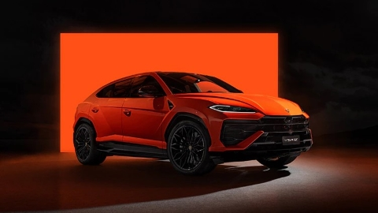

Lamborghini Urus
Overview
The Lamborghini Urus is the first Super Sport Utility Vehicle in the world to merge the soul of a super sports car with the functionality of an SUV. It is unmistakably a Lamborghini with its pure and elegant design and extreme proportions.
Specifications
- Engine: 4.0-liter twin-turbocharged V8
- Horsepower: 641 hp
- Torque: 627 lb-ft
- 0-60 mph: 3.5 seconds
- Top Speed: 190 mph
- Transmission: 8-speed automatic
- Drivetrain: All-wheel drive
- Weight: 2,200 kg (4,850 lbs)
- Price: Starting at $220,000
Design and Features
The Urus features a cutting-edge, aerodynamic design that is both sporty and aggressive. The interior is designed with luxury and comfort in mind, offering high-quality materials and advanced technology, including a customizable digital dashboard and touchscreen infotainment system.
Performance
The Lamborghini Urus offers an exhilarating driving experience with exceptional performance both on and off-road. Its adaptive air suspension and active roll stabilization system ensure comfort and stability, while the drive modes allow for a customized driving experience.
Safety and Technology
The Urus comes equipped with advanced safety features such as adaptive cruise control, lane-keeping assist, and a comprehensive suite of airbags. The vehicle's infotainment system supports both Apple CarPlay and Android Auto, ensuring seamless connectivity.